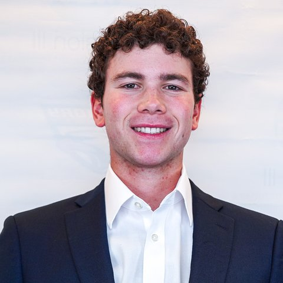

Background
I am a sophomore at Emory University's Goizueta Business School, pursuing a BBA with concentrations in Finance and Artificial Intelligence, and a pitcher on Emory's varsity baseball team. The Desk is where I put my investment thinking in writing: each memo makes a clear call (BUY, WATCH, or PASS) and lays out the thesis, catalysts, and risks behind it.
Experience
- Cloud5 Communications — Mergers and Acquisitions Intern (Summer 2026)
- Goizueta Credit & Restructuring (GCRX) — Analyst, Fall 2026 Analyst Cohort
- Scholars of Finance, Emory Chapter — VP of Finance and Operations
- Landscaping and Snow Removal Business — Founder and Operator, throughout high school
Beyond the Desk
I love watching football and baseball, and I am a huge Pittsburgh Steelers and Washington Nationals fan. I am also a golfer, and watching the Masters every April is a tradition I never miss. In the summer of 2025, I ran with the bulls in Pamplona, Spain.
Two Truths and a Lie
- My favorite food is twice baked potatoes.
- I have been to Iceland.
- I have a twin brother.
Reveal the lie
Number 3. I do not have a twin brother.